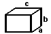
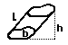
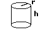

Surface Area Formulas
Surface Area of a Cube = 6 a2
 (a is the length of the side of
each edge of the cube)
(a is the length of the side of
each edge of the cube)
In words, the surface area of a cube is the area of the six squares that cover it. The area of one of them is a*a, or a 2 . Since these are all the same, you can multiply one of them by six, so the surface area of a cube is 6 times one of the sides squared.
Surface Area of a Rectangular Prism = 2ab + 2bc + 2ac
 (a, b, and c are the lengths of the 3 sides)
In words, the surface area of a rectangular prism is the area of the six rectangles that cover it. But we don't have to figure out all six because we know that the top and bottom are the same, the front and back are the same, and the left and right sides are the same.
The area of the top and bottom (side lengths a and c) = a*c. Since there are two of them, you get 2ac. The front and back have side lengths of b and c. The area of one of them is b*c, and there are two of them, so the surface area of those two is 2bc. The left and right side have side lengths of a and b, so the surface area of one of them is a*b. Again, there are two of them, so their combined surface area is 2ab.
Surface Area of Any Prism
 (b is the shape of the ends)
Surface Area = Lateral area + Area of two ends
(Lateral area) = (perimeter of shape b) * L
Surface Area = (perimeter of shape b) * L+ 2*(Area of shape b)
Surface Area of a Sphere = 4 pi r2
 (r is radius
of circle)
(r is radius
of circle)
Surface Area of a Cylinder = 2 pi r2 + 2 pi r h
 (h is the height of the cylinder, r is the radius of the top)
Surface Area = Areas of top and bottom +Area of the side
Surface Area = 2(Area of top) + (perimeter of top)* height
Surface Area = 2(pi r2) + (2 pi r)* h
In words, the easiest way is to think of a can. The surface area is the areas of all the parts needed to cover the can. That's the top, the bottom, and the paper label that wraps around the middle.
You can find the area of the top (or the bottom). That's the formula for area of a circle (pi r2). Since there is both a top and a bottom, that gets multiplied by two.
The side is like the label of the can. If you peel it off and lay it flat it will be a rectangle. The area of a rectangle is the product of the two sides. One side is the height of the can, the other side is the perimeter of the circle, since the label wraps once around the can. So the area of the rectangle is (2 pi r)* h.
Add those two parts together and you have the formula for the surface area of a cylinder.
Surface Area = 2(pi r 2) + (2 pi r)* h
Units
These equations will give you correct answers if you keep the units straight. For example - to find the surface area of a cube with sides of 5 inches, the equation is:
Surface Area = 6*(5 inches)2 = 6*(25 square inches) = 150 sq. inches